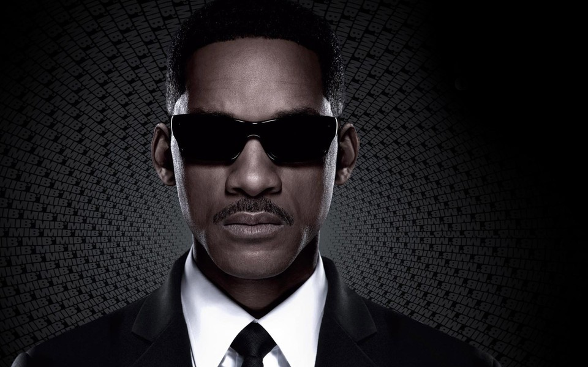
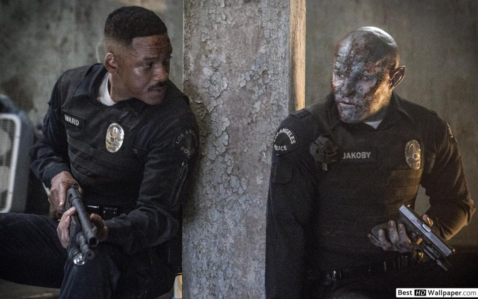

威尔·史密斯
个人简介
- 1968年9月25日出生是一名美国男演员、监制、嘻哈歌手。
- 他在电影、电视方面曾提名两座奥斯卡金像奖和五项金球奖提名。
- 而音乐方面也拿下四座格莱美奖。
- 出演较著名的作品有《绝地战警》（1995年）、《独立日》（1996年）、《黑衣人》（1997年）、《威尔史密斯之拳王阿里》（2001年）、
《我，机器人》（2004年）、《当幸福来敲门》（2006年）、《我是传奇》（2007年）、《震荡效应》（2015年）和《自杀小队》（2016年）《阿拉丁》（2019年）。
- 其中《威尔史密斯之拳王阿里》和《当幸福来敲门》曾让他获得奥斯卡最佳男主角的提名。
个人专辑
- 大丈夫日记 Big Willie Style（1997）
- Willennium（1999）
- Born to Reign（2002）
- Greatest Hits（2002）
- 失物招领 Lost & Found（2005）
个人电影
- 1990年 8月 The Fresh Prince of Bel-Air （DJ Jazzy Jeff & The Fresh Prince） 3 16 12 - The Fresh Prince of Bel-Air
- 1993年 Boom! Shake the Room 2 1 1 1
- 1997年 8月 Men in Black 2 15 1 1 Big Willie Style
- 1997年 12月 Just Cruisin' 56 83 23 - Big Willie Style
- 1998年 2月 Gettin' Jiggy Wit It 1 5 3 6 Big Willie Style
- 1998年 8月 Just The Two Of Us 20 3 2 27 Big Willie Style
- 1998年 12月 Miami 17 3 3 27 Big Willie Style
- 1999年 7月 Wild Wild West (Featuring Dru Hill & Kool Mo Dee) 1 9 2 8 Willennium
- 1999年 11月 Will2K (Featuring K-Ci) 25 2 2 3 Willennium
- 2000年 5月 Freakin' It 99 34 15 - Willennium
- 2000 So Fresh (Featuring DJ Jazzy Jeff, Biz Markie, & Slick Rick) - - - - Willennium
- 2002年 8月 Black Suits Comin' (Nod Ya Head) (Introducing Tra-Knox) 77 16 3 18 Born To Reign
- 2002年 1,000 Kisses (Featuring Jada Pinkett-Smith) - - - - Born To Reign
- 2005年 4月 Switch 7 1 2 1 Lost & Found
- 2005年 11月 Party Starter 25 45 19 33 Lost & Found
个人靓照


职业生涯
- 尽管很早就在音乐事业获得成功，但草率的理财却让史密斯在1990年濒临破产边缘时，此时他与美国全国广播公司签下一份合约，为他量身订做一出情景喜剧《新鲜王子妙事多》。
- 这个节目十分成功，并帮助史密斯开始展开他的演员生涯。
- 虽然史密斯在电影《六度分离》（Six Degrees of Separation）中有令人印象深刻的演出（在其中他饰演一名同性恋男子），但他的电影事业是在他与马汀·劳伦斯合演了动作电影《绝地战警》（1995）之后开始起飞。